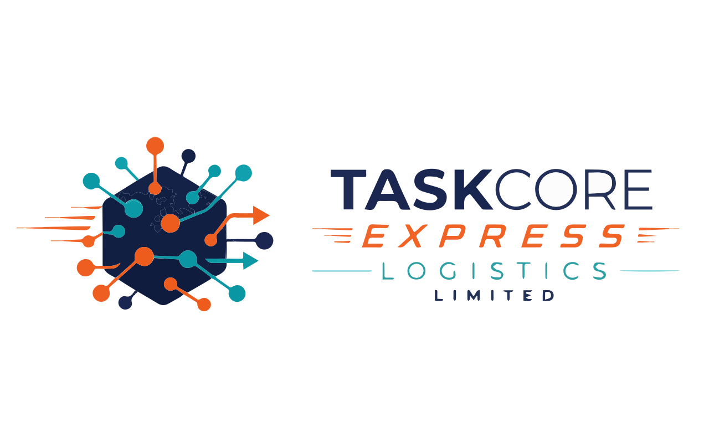

TaskCore Group Subsidiary
Modern refrigerated transportation for slaughtered meats within Oyo State.

Launching September
TaskCore Express Logistics LTD is focused on the refrigerated transportation of slaughtered meats using modern trucks designed to maintain better handling conditions from point of loading to delivery.
Modern cold-chain vehicles for temperature-conscious transportation of slaughtered meats.
Focused operations within Oyo State, supporting organized movement between approved meat handling points.
Designed around cleaner, safer, and more accountable transport practices for meat logistics.
Operational Focus
TaskCore Express Logistics LTD supports meat transportation with a dedicated cold-chain model for slaughtered meats. The service is being positioned for Oyo State operations and is expected to be up and running by September.
TaskCore Express Logistics LTD is operating in partnership with Verdantis Agro and C&E Ltd.
Why It Matters
By focusing on refrigerated meat transportation, TaskCore Express is designed to support safer distribution, better coordination, and improved confidence across the meat supply chain within Oyo State.
Contact TaskCore Group